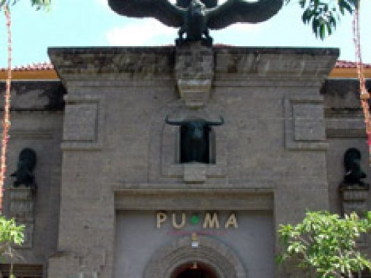

PUMA Museum didirikan pada 14 Oktober 2004 dan secara resmi diresmikan pada 31 Desember 2004 oleh Walikota Denpasar, Drs. A. A. Puspayoga. Museum ini lahir dari kecintaan pemiliknya terhadap benda-benda seni, khususnya karya seni lukis, patung, dan artefak primitif atau tribal. Ide awal berawal ketika pendiri, Made Gede Putrawan, mulai mengumpulkan karya seni sejak tahun 1970 dan kemudian menyadari pentingnya melestarikan koleksi tersebut sebagai bagian dari warisan budaya visual yang unik.
Asal mula museum ini bermula dari minat Made Gede Putrawan terhadap karya seni primitif dan budaya visual. Sejak tahun 1970, ia telah aktif mengumpulkan berbagai karya seni berupa lukisan, patung, dan benda-benda artefak tribal yang kemudian berkembang menjadi koleksi yang signifikan. Keputusan untuk mendirikan museum di Denpasar diambil agar koleksi tersebut bisa dinikmati, dipelajari, dan diapresiasi oleh publik luas, sekaligus menjadi ruang edukasi dan pelestarian seni yang bersifat universal.